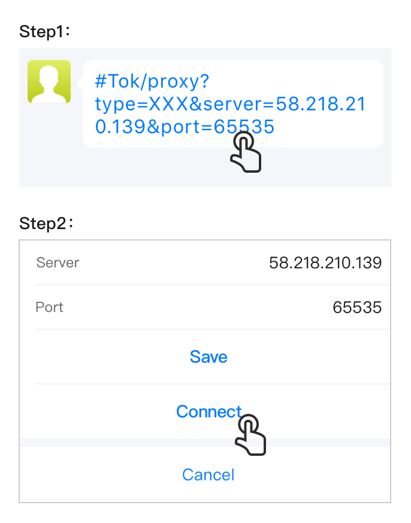
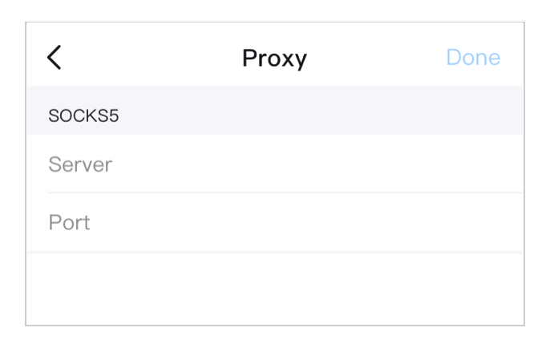
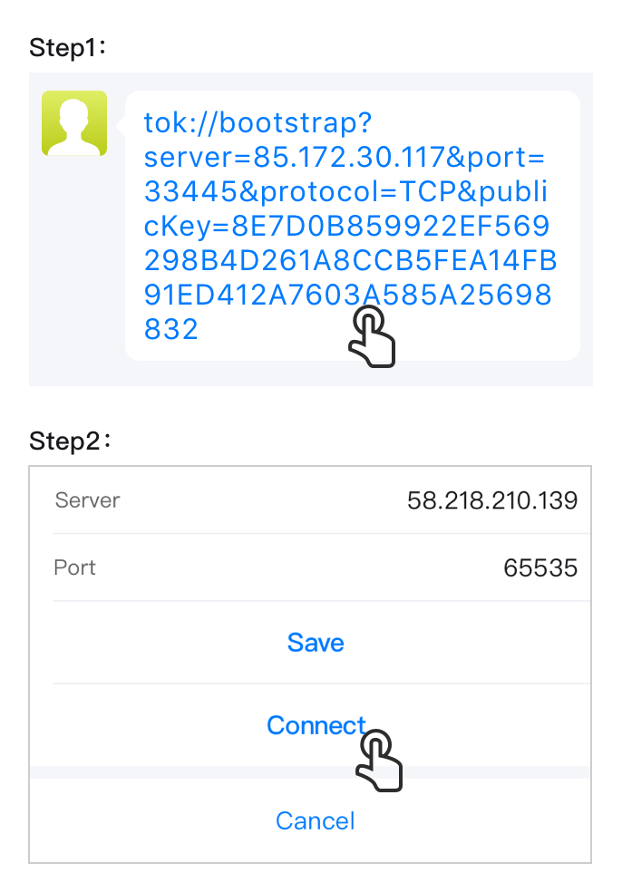
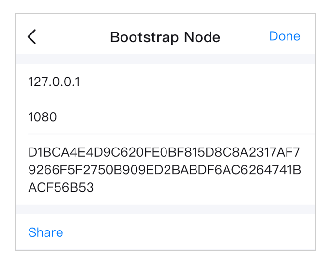

What is UDP?
A lightweight network transport protocol that effectively preven
blocks and speeds up network connection, but may consume more internet traffic and cell battery.
If your network connection is unstable, we recommend enabling UDP
How to set up a proxy (Proxy)?
The proxy acts as an intermediary between a private IP address and
another server on the Internet. A stable proxy will provide a good network connection.
Quick Setup:
1. Click on the proxy information shared by your friends in the
conversation box.
2. Click "Connect".

Manual Setup:
1. First get the information of a proxy server (build it yourself or
get it from someone else);
2. Enter the Server (IP address or domain name, usually IP address)
and port information respectively.
3. If it is a proxy that needs to verify identity, please enter
username and password. If not, please skip this step.
4. Click "Done" to finish the setup.

Hint:
1. Unable to connect within 10s will show that this proxy is not
available
2. Each time you open the app, you will try to connect to the proxy
first. If it is invalid, the system default network will be used.
3. Effective proxies may share between friends
How to set up a Bootstrap Node?
If your client wants to connect to a distributed network, you will
first need to connect to at least one node that is already connected to the distributed network,
and access more nodes through the node that you connected. Repeat this process to discover more
and more nodes. Many nodes together form a distributed network.
But if your client does not know any nodes in the network at startup,
you will need to connect to the Bootstrap Node first. Bootstrap Node is a basic condition that
enables you connect to the distributed network.
Some Bootstrap Node information is cached in the client and updated
in time, but configuring more effective boot nodes will improve network stability.
Quick Setup:
1. Click on the Bootstrap Node information shared by your friends in
the conversation box.
2. Click "Connect".

Manual Setup:
1. First get the Bootstrap Node information of a Bootstrap Node
(build it yourself or get it from someone else);
2. Enter (IP) Address, Port, and PublicKey respectively.
3. Click "Done" to finish the setup.

Hint:
1. Multiple Bootstrap Nodes could be configured in your client
2. When your client starts, it will first try to connect to the
Bootstrap Node(s) you configured. If all else fails, then your client would try to connect to
the client cached Bootstrap Nodes.